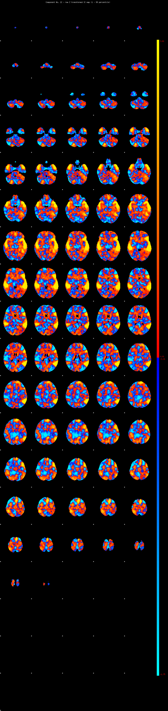
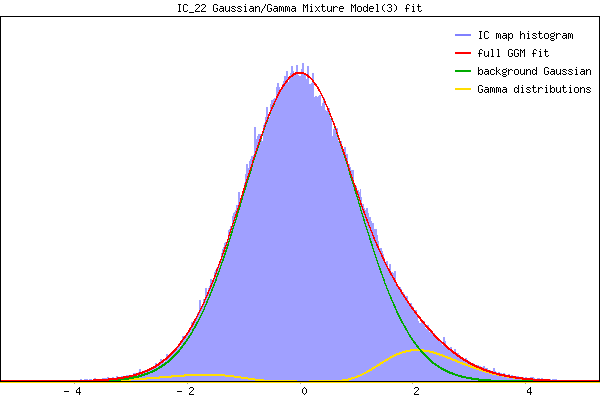

IC_22 Mixture Model fit
Means : -0.000000 2.304436 -1.954172
Vars : 1.000000 0.520923 0.570482
Prop. : 0.920695 0.064898 0.014407
This page produced automatically by MELODIC Version 3.15 - a part of FSL - FMRIB Software Library.